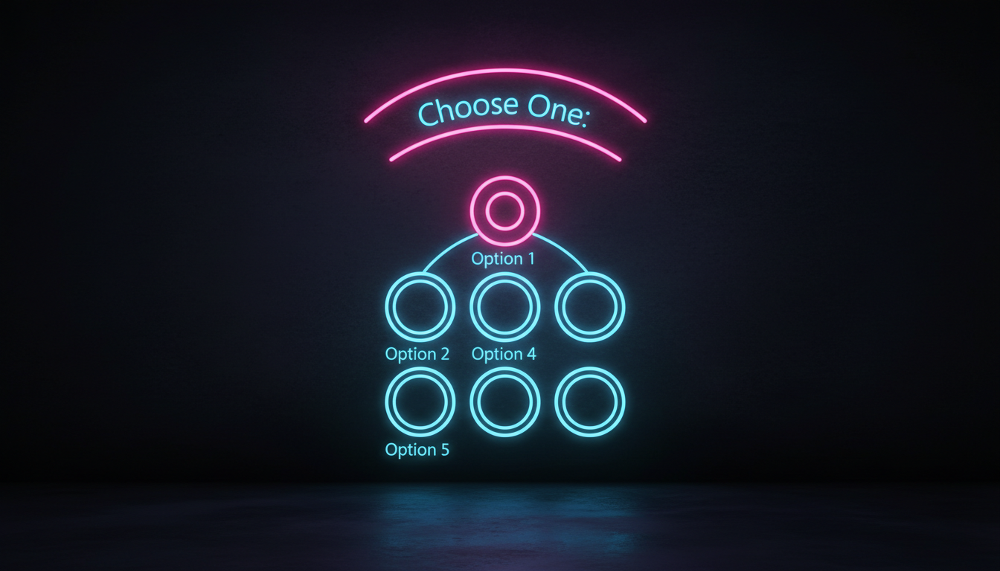

Взаємовиключний вибір, групування, події

// Група перемикачів (всередині GroupBox)
GroupBox^ grpLanguage = gcnew GroupBox();
grpLanguage->Text = "Мова програмування";
grpLanguage->Location = Point(20, 20);
grpLanguage->Size = Size(200, 150);
RadioButton^ rbCpp = gcnew RadioButton();
rbCpp->Text = "C++";
rbCpp->Location = Point(20, 30);
rbCpp->Checked = true;
grpLanguage->Controls->Add(rbCpp);
RadioButton^ rbCSharp = gcnew RadioButton();
rbCSharp->Text = "C#";
rbCSharp->Location = Point(20, 60);
grpLanguage->Controls->Add(rbCSharp);
RadioButton^ rbJava = gcnew RadioButton();
rbJava->Text = "Java";
rbJava->Location = Point(20, 90);
grpLanguage->Controls->Add(rbJava);
// Отримання вибору
String^ GetSelectedLanguage() {
for each(RadioButton^ rb in grpLanguage->Controls) {
if (rb->Checked) return rb->Text;
}
return "";
}